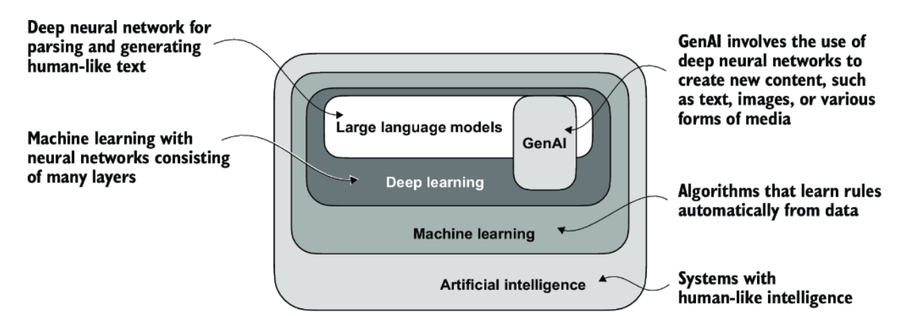

AI Product Management
History of Product Management
Product Management has evolved from its origins at HP in the 1940s into a key driver of innovation in tech. Early influences like the SCRUM Development Process and the Agile Manifesto reshaped how products are built, while programs like Google’s Associate Product Manager (APM) program and influential books standardized best practices. In recent years, PM has become one of the most sought-after careers and today the field is entering a new era with the rise of the AI Product Manager.
As Marc Andreessen famously wrote in Software Is Eating the World, software transformed every industry, and now, AI is poised to do the same. This marks the rise of the AI Product Manager.
Marc now predicts that AI Will Save the World, but this certaintly won’t happen automatically. We are living in a time when “Discoveries latent with such potent power, either for the blessing or the destruction of human beings as to make men’s responsibility in controlling them the most gigantic ever placed in human hands. … This age is fraught with limitless perils, as well as untold possibilities.”
You have the incredibly exciting and challenging opportunity to harness AI to improve the world. This class will help prepare you to seize that opportunity.

AI Product Management
AI Product Management is about creating products that either leverage or embed artificial intelligence to solve real problems for people. An AI product manager doesn’t build the AI models themselves, but they understand how AI works well enough to choose the right tools, guide the team, and make sure the product is useful, safe, and valuable.
They work on things like:
- Understanding what AI can and can’t do.
- Figuring out the best way to use AI for a specific problem.
- Working with engineers, designers, and data scientists to build and test the product. Although AI itself is blending and blurring the boundaries between these traditional roles enabling Product Managers to do more than previously possible.
- Making sure the AI’s results are accurate and helpful.
AI product managers connect AI technology to real-world needs so the product actually works for the people who use it.

AI and Machine Learning
You first need to understand something about how this technology works, at least at a high level. Artificial Intelligence (AI) is the broad idea of creating computer systems that can perform tasks we normally associate with human intelligence, like understanding language, recognizing patterns, making decisions, and generating creative content.
Machine Learning (ML) is a subset of AI that focuses on teaching computers to learn from data instead of following hard-coded instructions. In ML, we give the computer many examples (data) and let it find the patterns on its own. The more and better-quality data it sees, the better it gets at making predictions or generating useful outputs.
Within machine learning, deep learning uses layers of artificial “neurons” to handle extremely complex patterns—this is the technology behind most modern breakthroughs, including Large Language Models (LLMs) like ChatGPT.
Even if you won’t be building models yourself, understanding these basic concepts will help you ask the right questions, spot opportunities for AI in products, and work effectively with technical teams.

Supervised Learning
The branch of machine learning that powers today’s Generative AI breakthroughs is supervised learning. A conceptual example of supervised learning is teaching someone to guess the next word in a sentence by giving them lots of examples with the right answers.
For instance, imagine we train a model on sentences like:
- The cat sat on the mat.
- She went to the store.
- I like to eat pizza.
In each case, the words before the blank are the input, and the correct missing word is the label. The model makes a guess, checks if it matches the label, and adjusts its internal weights to improve next time.
After seeing millions of examples, the model learns patterns in how words are used so it can predict the missing word—even in sentences it has never seen before.
In short: supervised learning is learning patterns from labeled examples so you can make accurate predictions on new, unseen data.
The simplest form of supervised learning is regression, where the goal is to predict a number based on input data. For example, given a set of sentences and their average reading times, a regression model could learn to predict how long it might take someone to read a new sentence. The model trains on many input–output pairs, gradually learning the relationship between the features in the input and the numeric value in the output.
While regression can be done with simple formulas, modern AI—including Large Language Models—relies on neural networks to handle far more complex patterns. Neural networks are essentially many layers of interconnected regression-like steps, stacked and tuned to capture relationships in huge datasets.
Understanding these building blocks will help you see how LLMs work under the hood, even if the scale and complexity are much greater than in basic regression.
Gradient Descent
Gradient descent is the learning process that tunes a model to make better predictions over time. Imagine you’re standing on a foggy hillside and want to get to the lowest point in the valley. You can’t see far, so you take small steps downhill in the steepest direction you can feel under your feet.
In a neural network, the “hill” is the error, how wrong the model’s predictions are. The “steps” are weight adjustments which change the models predictions. After each guess, the network measures the error, figures out which direction will reduce it the most, and then tweaks the weights slightly to move in that direction.
By repeating this process many times, the network eventually settles in a low spot where the error is as small as possible.
In short: gradient descent is the process of taking small steps to reduce errors until the model’s predictions are as accurate as it can make them.